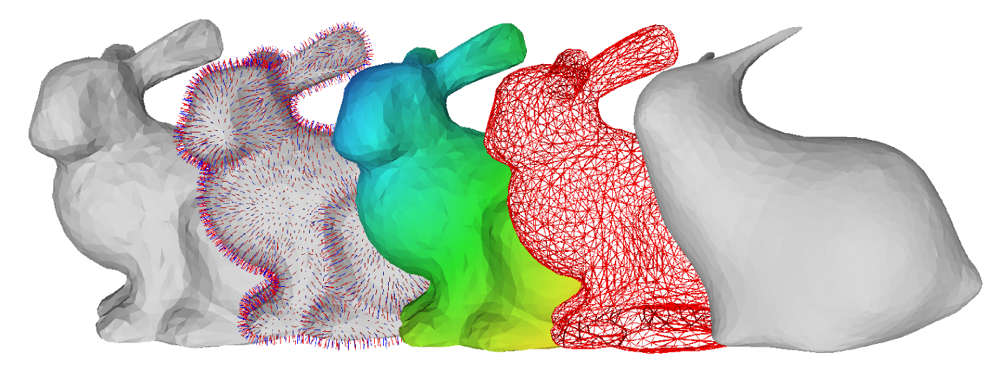

Welcome to GeomProc’s documentation!
GeomProc is a geometry processing library intended for educational purposes. Thus, the library was developed with an emphasis on legibility of the code, documentation, and ease of use, rather than efficiency, although the efficiency should not lag behind similar implementations in interpreted languages, as the included methods are based on state-of-the-art algorithms. However, there is no guarantee that the code is as efficient as a C++ implementation, or applicable to large triangle meshes. To ensure ease of use, the library has only one dependency: Python 3 with numpy. Note that an external mesh viewer such as MeshLab is required for visualizing the output of the library.
The library comprises a set of example implementations of geometry processing methods applicable to triangle meshes, point clouds, and implicit functions. The basic classes of the library implement triangle mesh and point cloud data structures. The library was developed from code initially written in Matlab.
Demos
User Guide
Modules
- geomproc package
- geomproc.alignment module
- geomproc.creation module
- geomproc.graph module
- geomproc.impsurf module
- geomproc.kdtree module
- geomproc.loading module
- geomproc.marching_cubes module
- geomproc.mesh module
- geomproc.misc module
- geomproc.pcloud module
- geomproc.read_options module
- geomproc.transform module
- geomproc.volume module
- geomproc.write_options module